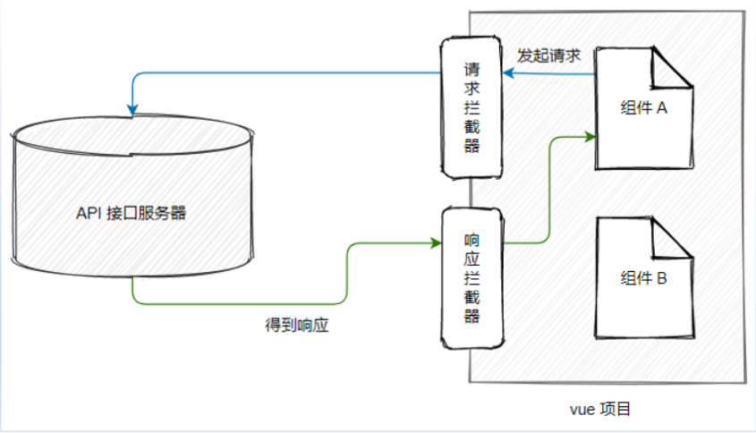
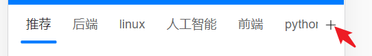

Day03_反馈操作和频道管理
# 今日学习目标
- 完成反馈面板铺设和使用
- 学习axios请求和响应拦截器
- 完成频道管理
# 1.反馈_一级面板铺设
# 目标
点击x按钮-出现一级反馈面板

# 分析
找到类似组件 - vant中的 ActionSheet 动作面板
main.js中注册
import { ActionSheet } from 'vant'; Vue.use(ActionSheet);在ArticleItem.vue中使用
<template> <div> <!-- 一条文章单元格并列 --> <!-- 反馈面板 --> <van-action-sheet v-model="show" :actions="actions" @select="onSelect" /> </div> </template> <script> export default { data () { return { show: false, actions: [ { name: '不感兴趣' }, { name: '反馈垃圾内容' }, { name: '拉黑作者' } ] } }, methods: { // 反馈面板点击事件 onSelect () { } } } </script>发现出来的不全, 分析DOM层级结构, 调整挂载位置, 给van-action-sheet设置
<van-action-sheet v-model="show" :actions="actions" @select="onSelect" get-container="body"/>补充取消按钮 文字
<van-action-sheet v-model="show" :actions="actions" @select="onSelect" get-container="body" cancel-text="取消"/>点击x反馈按钮, 显示反馈面板
<van-icon name="cross" @click="onCloseClick" /> <script> methods: { // 点击了叉号按钮 onCloseClick () { // 展示动作面板 this.show = true } } </script>
# 小结
- 明确目标, 找到组件, 微调整使用
# 2.反馈_二级面板铺设
# 目标
一级面板<反馈其他问题>点击
切换数据源显示二级面板内容

# 步骤
只要切换actions数组的值即可
不想散落在逻辑页面里, 所以在api/report.js定义2个变量
export const firstActions = [ { name: '不感兴趣' }, { name: '反馈垃圾内容' } ] export const secondActions = [ { value: 0, name: '其它问题' }, { value: 1, name: '标题夸张' }, { value: 2, name: '低俗色情' }, { value: 3, name: '错别字多' }, { value: 4, name: '旧闻重复' }, { value: 6, name: '内容不实' }, { value: 8, name: '侵权' }, { value: 5, name: '广告软文' }, { value: 7, name: '涉嫌违法犯罪' } ]在ArticleItem.vue中引入使用
import { firstActions, secondActions } from '@/api/reports' data(){ return { // ...省略其他 actions: firstActions } }点击反馈面板切换数据
onSelect (action) { // action绑定的数据对象, index是索引 if (action.name === '反馈垃圾内容') { // 证明点击的是反馈垃圾内容 this.actions = this.secondActions } }
# 小结
- 面板数据切换的思想是什么?
- actions是反馈面板要展示的数据
- 点击切换不同数据即可
# 3.反馈_返回一级面板
# 目标
一级和二级面板来回切换
取消按钮的2个文字和状态

# 思路
- 点击<反馈垃圾内容>切换actions数据为secondActions
- 下面文字显示返回
- 点击返回(不能关闭), 而是切换actions数据为firstActions
- 下面文字显示取消
# 步骤
定义变量cancelText设置底部文字(注意只是显示的文字而已)
绑定取消事件(无论显示取消/返回文字)底部按钮点击都触发
<van-action-sheet v-model="show" :actions="actions" @select="onSelect" get-container="body" :cancel-text="cancelText"/> <script> data () { return { show: false, actions: firstActions, cancelText: '取消' // 底部按钮文字 } }, methods: { // 反馈面板点击事件 onSelect (action) { if (action.name === '反馈垃圾内容') { this.actions = secondActions this.cancelText = '返回' // 修改底部按钮显示文字 } } }, </script>监测取消事件, 阻止弹窗关闭
<van-action-sheet v-model="show" :actions="actions" @select="onSelect" get-container="body" :cancel-text="cancelText" @cancel="onCancel"/> <script> methods: { // 取消事件 onCancel () { if (this.cancelText === '返回') { this.actions = firstActions this.cancelText = '取消' this.show = true // 点返回不要让弹窗关闭, 点取消文字按钮, 弹窗默认关闭 } } } </script>
# 4.反馈_不感兴趣
# 目标
调用接口

# 步骤
查看接口文档 - 定义反馈不喜欢文章api/index.js
// 文章 - 不感兴趣 export const articleDislikeAPI = ({ target }) => { return request({ url: '/v1_0/article/dislikes', method: 'POST', data: { target: target }, headers: { Authorization: 'Bearer ' + store.state.token } }) }在ArticleItem.vue中, 点击不感兴趣文章, 传递文章id给ArticleList页面
// 反馈面板点击事件 onSelect (action) { if (action.name === '反馈垃圾内容') { this.actions = secondActions this.cancelText = '返回' } else if (action.name === '不感兴趣') { this.$emit('dislike', this.obj) this.show = false // 关闭弹窗 } }在ArticleList.vue中, 绑定dislike事件和dislikeFn方法
弄个Notify通知框, 提示用户反馈结果
import { articleDislikeAPI } from '@/api' import { Notify } from 'vant' // 反馈(不感兴趣) async dislikeFn (obj) { try { await articleDislikeAPI({ target: obj.art_id }) Notify({ type: 'success', message: '反馈成功' }) } catch (err) { Notify({ type: 'warning', message: '反馈失败-联系程序员' }) } }
# 小结
为何这次await左边不接受结果
- 只要没报错, 就代表反馈成功, 而且要响应数据也无用
# 5.反馈_举报文章
# 目标
在上个例子基础上
点击举报类型调用接口

# 步骤
api/index.js - 定义接口方法
// 文章 - 举报 export const articleReportsAPI = ({ target, type, remark }) => { return request({ url: '/v1_0/article/reports', method: 'POST', data: { target: target, type: type, remark: remark }, headers: { Authorization: 'Bearer ' + store.state.token } }) }ArticleItem.vue触发父级@reports事件, 传反馈的文章对象出来和反馈类型
// 反馈面板点击事件 onSelect (action) { if (action.name === '反馈垃圾内容') { this.actions = secondActions this.cancelText = '返回' } else if (action.name === '不感兴趣') { this.$emit('dislike', this.obj) this.show = false } else { // 这里就是二级反馈 this.$emit('reports', this.obj, action.value) // 外面需要反馈类型的值 this.actions = firstActions this.show = false } },在ArticleList.vue里引入接口, 和@reports事件方法使用
import { articleReportsAPI } from '@/api' // 反馈(举报) async reportsFn (obj, type) { try { await articleReportsAPI({ target: obj.art_id, type: type, remark: '就是其他问题' }) Notify({ type: 'success', message: '举报成功' }) } catch (err) { Notify({ type: 'warning', message: '举报失败' }) } }
# 小结
为什么要传action.value出去?
因为接口要使用, 我就要想尽一切办法给他
# 6.axios_响应拦截器
# 目标
什么是响应
什么是axios的响应拦截器

# 场景
在响应回来后, 马上执行响应拦截器函数
例如: 判断是否错误401, 统一进行权限判断
// 添加响应拦截器 axios.interceptors.response.use(function (response) { // 当状态码为2xx/3xx开头的进这里 // 对响应数据做点什么 return response }, async function (error) { // 响应状态码4xx/5xx进这里 // 对响应错误做点什么 // console.dir(error) if (error.response.status === 401) { // 身份过期 // token续签方式1: 去登录页重新登录, token无用, 清掉-确保路由守卫if进不去 store.commit('setToken', '') router.push({ path: '/login' }) } return Promise.reject(error) })
# 小结
- 响应拦截器什么时候执行?
- 在响应回来以后
- 什么时候进响应拦截器成功, 什么时候进失败?
- 2xx/3xx开头的响应状态码进入成功
- 4xx/5xx开头的响应状态码进入失败
# 7.axios_请求拦截器
# 目标
- 什么是请求
- 什么是axios的请求拦截器
# 场景
在发起请求之前, 最后对要发送的请求配置对象进行修改
例如: 如果本地有token, 携带在请求头给后台
// 添加请求拦截器 axios.interceptors.request.use(function (config) { // 在发送请求之前做些什么, 如果vuex里有token携带在请求头中 if (store.state.token.length > 0 && config.headers.Authorization === undefined) { // 发起请求之前, 把token携带在请求头上(表明自己身份) config.headers.Authorization = 'Bearer ' + store.state.token } return config }, function (error) { // 对请求错误做些什么 return Promise.reject(error) })所有api接口里以后暂时不用自己携带Headers+Token了
# 小结
- 请求拦截器时候时候执行?
- 在发起请求最后一刻执行
# 8.频道管理_+号准备(上午结束)
# 目标
+标签准备和样式

# 步骤
标签准备
<!-- Tab 标签页 --> <!-- ...省略其他代码 --> <!-- 编辑频道图标 --> <van-icon name="plus" size="0.37333334rem" class="moreChannels"/>样式美化
// 设置 tabs 容器的样式 /deep/ .van-tabs__wrap { padding-right: 30px; background-color: #fff; } // 设置小图标的样式 .moreChannels { position: fixed; top: 62px; right: 8px; z-index: 999; }
# 小结
- 准备图标icon组件
- 调整样式
# 9.频道管理_弹出层标签
# 目标
频道页面弹出层标签

# 步骤
寻找类似的组件 - vant组件库叫popup组件
main.js中注册popup组件
import { Popup } from 'vant'; Vue.use(Popup);单独创建Home/ChannelEdit.vue - 频道编辑组件
需要用到的组件, 不要忘了全局注册
<template> <div> <!-- 弹出层的头部区域 --> <van-nav-bar title="频道管理"> <template #right> <van-icon name="cross" size="0.37333334rem" color="white"/> </template> </van-nav-bar> <!-- 我的频道 --> <div class="my-channel-box"> <div class="channel-title"> <span>我的频道 <span class="small-title"> 点击进入频道 </span> </span> <span>编辑</span> </div> <!-- 我的频道列表 --> <van-row type="flex"> <van-col span="6"> <div class="channel-item van-hairline--surround"> 名字 <!-- 删除的徽标 --> <van-badge color="transparent" class="cross-badge"> <template #content> <van-icon name="cross" class="badge-icon" color="#cfcfcf" size="0.32rem" /> </template> </van-badge> </div> </van-col> </van-row> </div> <!-- 更多频道 --> <div class="more-channel-box"> <div class="channel-title"> <span>点击添加更多频道：</span> </div> <!-- 更多频道列表 --> <van-row type="flex"> <van-col span="6"> <div class="channel-item van-hairline--surround">名字</div> </van-col> </van-row> </div> </div> </template> <script> export default {} </script> <style scoped lang="less"> .van-popup, .popup-container { background-color: transparent; height: 100%; width: 100%; } .popup-container { display: flex; flex-direction: column; } .pop-header { height: 90px; background-color: #007bff; color: white; text-align: center; font-size: 14px; position: relative; .title { width: 100%; position: absolute; bottom: 15px; } } .pop-body { flex: 1; overflow: scroll; padding: 8px; background-color: white; } .my-channel-box, .more-channel-box { .channel-title { display: flex; justify-content: space-between; font-size: 14px; line-height: 28px; padding: 0 6px; } } .channel-item { font-size: 12px; text-align: center; line-height: 36px; background-color: #fafafa; margin: 5px; } /*删除的微标 */ .cross-badge { position: absolute; right: -3px; top: 0; border: none; } /*提示文字 */ .small-title { font-size: 10px; color: gray; } </style>在Home/index.vue 引入注册使用
<template> <div> <!-- 头部标签 --> <!-- 频道部分 --> <!-- 编辑频道图标 --> <!-- 弹出层组件 --> <van-popup v-model="show" class="edit_wrap"> <!-- 弹出层的主体区域 --> <channel-edit></channel-edit> </van-popup> </div> </template> <script> import ChannelEdit from './ChannelEdit.vue' export default { data () { return { show: false // 编辑频道弹出层显示 } }, components: { ChannelEdit } } </script>准备变量show, 点击按钮处弹窗
<van-icon name="plus" size="0.37333334rem" class="moreChannels" @click="show = true"/>美化样式: 让弹出层占满屏幕
==不要选择, van_popup类名, 因为反馈的弹出层也会变大==
/* 频道编辑弹出层铺满屏幕 */ .edit_wrap{ width: 100%; height: 100%; }补充使用组件Row, Col, Badge, main.js中注册
import { Row, Col, Badge } from 'vant' Vue.use(Badge) Vue.use(Row) Vue.use(Col)点击弹出层x, 关闭
ChannelEdit内向父传事件, 影响show的值
Home/index.vue内
<!-- 弹出层的主体区域 --> <channel-edit @close="show = false"></channel-edit>ChannelEdit.vue内
<van-nav-bar title="频道管理"> <template #right> <van-icon name="cross" size="0.37333334rem" color="white" @click="$emit('close')"/> </template> </van-nav-bar>
# 小结
- ChannelEdit.vue页面 - 是弹出层内容组件
- van-popup组件是弹出层, 内嵌ChannelEdit组件
# 10.频道管理_数据准备
# 目标
- 更多频道 = 所有频道 - 我的频道
# 步骤
最开始定义过获取所有频道接口方法
也定义过用户已选频道接口方法
获取数据, 设置到变量上
在ChannelEdit页面内, 首页把用户已选频道传入
import { allChannelListAPI } from '@/api' export default { data () { return { allChannelList: [] // 所有频道 } }, props: { userChannelList: { type: Array, default: () => [] } }, async created () { const res = await allChannelListAPI() console.log(res) this.allChannelList = res.data.data.channels } }<channel-edit :userChannelList="channelList" @close="show = false"></channel-edit>ChannelEdit内设置计算属性 - 提取未选中的频道数据
computed: { unChannelList () { return this.allChannelList.filter(obj => { const index = this.userChannelList.findIndex(obj2 => obj2.id === obj.id) if (index === -1) return true }) } }在Home/ChannelEdit.vue编辑频道组件上, 对应标签位置, 循环name使用即可
<!-- 我的频道列表 --> <van-row type="flex"> <van-col span="6" v-for="obj in userChannelList" :key="obj.id"> <div class="channel-item van-hairline--surround"> {{ obj.name }} <!-- 删除的徽标 --> <van-badge color="transparent" class="cross-badge"> <template #content> <van-icon name="cross" class="badge-icon" color="#cfcfcf" size="0.32rem" /> </template> </van-badge> </div> </van-col> </van-row> <!-- 更多频道 --> <div class="more-channel-box"> <div class="channel-title"> <span>点击添加更多频道：</span> </div> <!-- 更多频道列表 --> <van-row type="flex"> <van-col span="6" v-for="obj in unChannelList" :key="obj.id"> <div class="channel-item van-hairline--surround">{{ obj.name }}</div> </van-col> </van-row> </div>
# 小结
如何从全部数据中, 筛选出已选数组里没有的
遍历全部数据中的每个, 去已选数组里查找, 找不到收集起来
# 11.频道管理_编辑状态
# 目标
点击编辑按钮
显示文字切换
x微标切换

# 步骤
点击编辑按钮实现文字切换
<div class="channel-title"> <span>我的频道 <span class="small-title"> {{ isEdit ? '点击删除频道' : '点击进入频道' }} </span> </span> <span @click="isEdit = !isEdit">{{ isEdit ? '完成' : '编辑' }}</span> </div> <script> export default { data () { return { isEdit: false // 控制编辑状态 } } } </script>设置x微标显示与否
==推荐频道上不能出现x==
<!-- 删除的徽标 --> <van-badge color="transparent" class="cross-badge" v-if="isEdit"> <template #content> <van-icon name="cross" class="badge-icon" color="#cfcfcf" size="0.32rem" /> </template> </van-badge>
# 小结
如何在2个状态之间来回切换?
点击事件, 让变量取反再赋予回去
# 12.频道管理_新增频道
# 目标
新增频道效果

# 步骤
更多频道选择 - 绑定点击事件
<van-col span="6" v-for="obj in unChannelList" :key="obj.id" @click="addFn(obj)"> <div class="channel-item van-hairline--surround"> {{ obj.name }} </div> </van-col> <script> methods: { // 新增频道 addFn (obj) { if (this.isEdit === true) { this.$emit('addChannel', obj) } } } </script>回传要添加的频道obj对象, 子传父
addFn (item) { // 新增频道 if (this.isEdit === true) { // 编辑状态 this.$emit('add', item) } }在Home/index.vue, 接收后, 添加到频道数组里
注意: 你有计算属性, 所以引用变量改变, 未选频道自动重新计算
<!-- 弹出层的主体区域 --> <channel-edit :userChannelList="channelList" @close="show = false" @addChannel="addChannelFn"></channel-edit> <script> methods: { // 添加频道 addChannelFn (obj) { this.channelList.push(obj) } }, </script>
# 小结
为何要子传父?
因为数组在父页面中, 而且不违反相当数据流规范
# 13.频道管理_更新频道
# 目标
- 新增 / 删除后同步给后台
# 步骤
定义更新频道接口方法
// 频道 - 更新已选 export const updateChannelAPI = ({ channels }) => { return request({ url: '/v1_0/user/channels', method: 'PUT', data: { channels: channels } }) }在Home/index.vue - 引入接口方法, 在新增频道方法中
把数据预处理成后台想要的格式, 直接把频道数组更新覆盖给后台
import { updateChannelAPI } from '@/api' async editFn (obj, index, type) { // 编辑频道 if (type === 'add') { this.list.push(obj) } const arr = this.list.filter((obj) => { return obj.id !== 0 }) // 先过滤掉id为0的推荐频道, 把剩余的数组返回 console.log(arr) const resultList = arr.map((item, index) => { const newObj = { ...item } // 浅拷贝(让对象和原数组脱离关系) newObj.seq = index + 1 delete newObj.name // 删除对象里name键值对 return newObj }) // map会收集每次遍历return的值形成一个新数组 console.log(resultList) await updateChannelAPI({ channels: resultList }) },
# 小结
什么是数据预处理?
要在前端使用前, 可以把数据操作一下, 要给后端使用前, 也可以用js代码处理一下
# 14.频道管理_删除频道
# 目标
在编辑状态下, 点击频道删除

# 步骤
推荐频道不允许删除, 所以单独判断一下, 不给删除频道小微标
<!-- 删除的徽标 --> <van-badge color="transparent" class="cross-badge" v-if="isEdit && obj.name !== '推荐'"> <template #content> <van-icon name="cross" class="badge-icon" color="#cfcfcf" size="0.32rem" /> </template> </van-badge>点击选项删除(而不是点击右上角小微标)
<!-- 我的频道列表 --> <van-row type="flex"> <van-col span="6" v-for="obj in tabsList" :key="obj.id" @click="removeFn(obj)"> </van-col> </van-row>从ChannelEdit.vue传递要删除的索引到Home/index.vue删除频道
推荐频道不能删除
// 删除频道 removeFn (obj) { if (this.isEdit === true && obj.name !== '推荐') { this.$emit('removeChannel', obj) } }Home/index.vue - 监听removeChannel事件
<!-- 弹出层的主体区域 --> <channel-edit :userChannelList="channelList" @close="show = false" @addChannel="addChannelFn" @removeChannel="removeChannelFn"></channel-edit>把更新方法提取, 分别调用
methods: { // 添加频道 async addChannelFn (obj) { this.channelList.push(obj) this.updateChannel() }, // 统一更新频道 async updateChannel () { // 先拷贝一份数组(前端页面用channelList, 后端用拷贝出的数组) // 数组第一层, 对象里key+value是第二层 const newArr = this.channelList.map(obj => { const newObj = { ...obj } return newObj }) // 先剔除推荐 const index = newArr.findIndex(obj => obj.name === '推荐') newArr.splice(index, 1) // 转换字段 newArr.forEach((obj, index) => { delete obj.name obj.seq = index + 1 }) // 调用接口 await updateChannelAPI({ channels: newArr }) }, // 删除频道 async removeChannelFn (obj) { // 找到这个频道在数组下标删除 const ind = this.channelList.findIndex(item => item.id === obj.id) this.channelList.splice(ind, 1) this.updateChannel() } },
# 小结
如何区分判断推荐不能操作?
x标签是否显示, 只是个显示, 但是事件还在
js代码还是需要, 判断是否为推荐
# 15.频道管理_重置编辑状态
# 目标
- 弹出层关闭重置编辑状态
# 步骤
监测弹出层关闭事件(查阅vant文档)
绑定@closed事件
channel-edit添加ref(为了获取组件对象, 修改内部的isEdit变量
<!-- 弹出层组件 --> <van-popup v-model="show" class="edit_wrap" @closed="onPopupClosed"> <!-- 弹出层的主体区域 --> <channel-edit :userChannelList="channelList" @close="show = false" @addChannel="addChannelFn" @removeChannel="removeChannelFn" ref="channelEdit"></channel-edit> </van-popup>在Home/index.vue - 访问到ChannelEdit.vue的isEdit变量设置为false
methods: { // 弹层关闭-重置编辑频道状态 onPopupClosed () { this.$refs.channelEdit.isEdit = false } }
# 小结
父亲如何操作子组件内的变量?
可以通过ref和$refs来获取子组件对象, 然后操作子组件对象里的一切
# 16.频道管理_进入
# 目标
在编辑频道页面, 点击进入频道

# 步骤
在ChannelEdit.vue的我的频道, 点击事件判断
// 删除频道 removeFn (obj) { if (this.isEdit === true && obj.name !== '推荐') { // 删除频道 this.$emit('removeChannel', obj) } else { // 进入逻辑 this.$emit('changeChannel', obj) this.$emit('close') // 关闭弹窗 } }在Home/index.vue - 绑定@changeChannel事件, 准备切换显示频道
<channel-edit :userChannelList="channelList" @close="show = false" @addChannel="addChannelFn" @removeChannel="removeChannelFn" ref="channelEdit" @changeChannel="channgeChannelFn" ></channel-edit> <script> // 切换频道 channgeChannelFn (obj) { this.channelId = obj.id // 传过来的频道ID, 影响tabs默认v-model的选择 } </script>
# 小结
- van-tabs的v-model值改变, 自动影响van-tab对应内容列表出现
- 如果van-tab对应ArticleList第一次出现会执行created拿到频道id请求数据, 铺设文章列表
- 如果van-tab对应ArticleList以后出现, 组件不会删除重建, 继续显示原来的文章列表